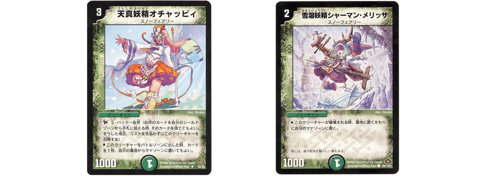

イラコン最終入り | カスミさん軸スノーフェアリー
はじめに
初めましての方は初めまして。こちらは先日行われたデュエル・マスターズプレイスイラストコンテストで、キャラクター部門優秀賞に残ったデッキの解説になります。
一応自己紹介しておくと、昨年までは毎月両Divisionマスター到達、近頃は気が向いた時だけマスターを目指す程度です(にじみ出る眠れる獅子感)。
最終入り×1 イラコンの
自己最高レートは4909いいねです。
『 ……フータローの番だよ 』#五等分の花嫁 #デュエプレ pic.twitter.com/VfDNBLqQuV
— ポムポムブリンク (@pompomblink) July 27, 2022
さて、自己紹介にあまり意味はないと思うので、早速参りましょう。

こちらがイラコン最終入りデッキです。
目玉は何と言っても、カスミさんを主軸に置いて目立つ位置にガン積みしていることです。
圧倒的Tier1候補であるルピコ・ダピコ、また公式バブみお姉さんエレナ、脇の守護者ルカ、自然入りでは必ず見かけるチュリンを採用していません。
その周りを堅実な強カードであるメカクレ属性スノーフェアリーで囲った形になります。
カスミさんはポテンシャルは非常に高いものの、5~6弾時に実装されて以来、プレイマットもスリーブも公式から配給されない若干不遇なカードでした。
他のデュエマシティ住人との絡みもなくはないのですが、上記ナビゲーター姉妹や守護者同士並みのシナジーは未だ見つかっていません（と言っても、将来的な期待はかなり持てるカードです）。
しかし、ショップに出入りするたびにこちらに向けてくれる笑顔、イベントで見せる多彩な表情、そして圧倒的太もものポテンシャル。これらの魅力はまだまだ浸透しているとは言えず、うまく調整して環境に持ち込めばTier1クラスとも対等に渡り合えると信じていました。
また、今回のデッキはゼロから組んだというわけではありません。
今年5月の14弾発売時に組んでおいたカスミさん種族デッキ（タッチカイト）が基盤となっています。
この縦長キャンバスにポージングを詰め込みまくるデッキは非常に優秀で、構築にかかるコスト（主に時間と体力）はかなり高いものの、効率的なマナブーストを挟むことで絵が簡単に映えることで有名かと思います。
構図や全体の色味など、あまり細かいことは考えずにマナブースト（深夜コーヒー・カップ麺・おやつ）を繰り返し、最終的に一気に盤面を埋め尽くしてゴリ押しする姿はさながらバルガライゾウのようですね。

私はさらに、ポージングの見えない部分もまあまあ描きます。
こうすることで、見えない部分のせいでデッサンが狂うのを防ぎ、細部も描けて楽しいのでなんだかんだで結果的に速く完成します。
デッキ構築のコストはもちろん左肩あがりにはなってしまいますけどね（苦笑）。
ただ、このカスミさんデッキは見えない部分も非常に可愛らしく構築することができたので、何とか見えるようにできないかと日頃考えていました。
今回のイラコンは、過去に構築したデッキをそのまま持ち込んでも良いというレギュレーションだったので、ついにこのデッキを再度活用できるようになった次第です。
制作過程
まず、キャンバスの作成。
今回のイラコンはA4横サイズが推奨されていましたので、ひとまずその形に。
解像度は300dpi程度（ドットパーインチと読む。画像のマス目がどれだけきめ細かいかを表す）でしたが、なんとなく350dpiに上げてリッチに制作します。
また、最終1位のデッキはプレイマット/スリーブ化が約束されています。
私は自分の描いたカスミさんプレマで公認大会に凸してドヤ顔したいので、夢は大きく最終1位狙いです。
しかし、このレギュレーションが結構厄介です。
横にかなり長いプレイマットと、縦のスリーブ両方で映える構図にしなければなりません。一応、最終入りすれば必要に応じて加筆修正をしてくれるそうです。
でも、私は子供の頃から先生に絵を手直しされるのがクッソ嫌いなので、頑張って頭を捻ります。
一見、A4横サイズは応募する人が誰でも描きやすい万能サイズのようにも思えます。
しかし、縦にも横にもできる構図を目指すと、自ずとモチーフを大きく描くことが難しくもなります。
めっちゃ空白が出来やすい
デュエプレイラコン、横のプレマと縦のスリーブに流用しやすいように推奨サイズA4横にしてるけど
— ポムポムブリンク (@pompomblink) September 6, 2022
これめっちゃ無難な構図になるな pic.twitter.com/hjCTZvGGfF
また横構図で背景まで描き込んだ場合、縦にした時大きく切り取られます。これにより、クリーチャーや登場人物を複数名描く構図は「切り取ったら一気に萎む」というジレンマも抱えやすくなることが見て取れます。
幸いA4横は推奨サイズであるため、ここから各自、キャンバスサイズを微調整していくと有利が取れるというメタを張りました。

採用カード
カスミさんの周りには、お馴染みスノーフェアリー軍団を描きたいだけ描いていきます。
この時のADのランクマッチでは「ブリカス」ことダイヤモンドブリザード・ダイヤモンドカスケードが猛威を奮っていましたので、これらに積まれているスノーフェアリーをピックアップ。
本音では春風妖精ポップルや雪渓妖精マルル、純潔妖精コスモスも描きたかったのですが、流石に枠がありません。
人によっては「入ってねーの？」と思われるかもしれませんが、より多くの対面を見るために、今回のメンバーを選出しました。
女性ばかりの華やかな構図にポレゴンを入れるかはだいぶ悩みましたが、新弾でデフォルメバージョンイラストを獲得していたため、ギリギリ枠に収まった形になります。

途中、オチャッピィとシャーマン・メリッサの異様な作画コストの高さに気づき悶絶し、イラコン制限時間ギリギリまでの試合に持ち込まれることになるのは完全に想定外でした。
特にオチャッピィのお腹問題（カードイラストではめっちゃ妊婦に見えて性癖が歪むアレ）には困りました。そっちも良いなぁ……と思うのですが、今回はたぶんお腹いっぱいだったんだろうなという解釈で進めることに。
正直めちゃくちゃ悩みすぎて時間が溶けました。
またサエポヨ作画時にも問題が発生します。
デュエプレ実装時につけられたあの「 私のハンマーはッ♪ 私の初恋ッ♪ 」というボイスです。
カードイラストをどれだけじっくり見ても、どれがハンマーなのか未だにわかりません。
見なかったことにしました。
（かなり念入りに調べたし、アニメの3Dモデルも紙版のバージョン違いも調べたけどわからんかった）
そうして、大体2日くらいの調整の末に、デッキが完成しました。
デッキ提出30分前に、滑り込みセーフ。眼精疲労とか首肩のダメージがえらいことになってたし、過剰マナブーストの代償にカフェイン・糖果糖液糖・脂肪分の摂りすぎでなんか身体の具合がおかしくなりました。
そして、10月23日の公式生配信で、デュエプレイラコン結果発表（1:40:00〜がイラコン）。
見事、私のカスミさん軸スノーフェアリーデッキはキャラクターイラスト部門優秀賞の一角に輝き、最終入りを決めたのでした。
以上になります。
稚拙な文章になりましたが、最後までご覧いただきありがとうございました。
本当に強いデッキなので、ランクマッチで勝てなくなったら、ぜひ使ってみてください！
……
……
……

俺のツヴァイランサーうわあああああああああああああああああああああああああああああああああああああああああああああああああああああああああああああああああああああああああああああああ（クリーチャー部門落選）
(悲報 : まだくっそ長いです。)
正直にいうと、本命はこっちのつもりでした。
カスミさんデッキも一切後悔ないし、最強デッキを組んだと思っていて自信はありましたが、ツヴァイも相当お気に入りだった……。
7月24日の公式生配信でデュエプレイラコン開催のお知らせを見た時は胸が高鳴りましたが、その時点でスケジュールは9月15日までギッッッチリ埋まってて。
イラコン……うごごごごご
— ポムポムブリンク (@pompomblink) July 24, 2022
脳のニューロンが発火しまくって焼き切れるんじゃねーかってくらい描いて描いて描きまくっていた時期でした。
眼精疲労がきつすぎて目薬とヒアルロン酸が手放せないし、毎日蕁麻疹は消えないし、頭に粉糖積んでんのかってくらい頭皮のフケが止まらなくなるし。
それでも何とか区切りをつけて、イラコン締切前の6日間に時間を作って、全力でツヴァイとカスミさんを描きました。
ツヴァイが5日間、カスミさんが2日間くらい（時間感覚がない）かかりました。
体力も気力も時間もギリギリでしたが、これ以上時間をかけても今以上にはならない！本気の全力絵が完成したと思います（今年修羅場でも90%の力が出せるようになってきた）。
なので、公式のイラコン結果発表では最優秀賞が欲しくて仕方なかったので……
キャラクター部門優秀賞でカスミさんが選ばれているのを見た時は「うわああああああああああああああああああああああああ（ラス盾スパーク）」叫んでしまいました。
うわああああああああああああああああああ
— ポムポムブリンク (@pompomblink) October 23, 2022
↑実は全力の慟哭でした
祝酒なのか苦汁なのかよくわからん状態のお酒を飲みながら、2日くらい放心状態で過ごしていました。
でもその間、上記の僕のツイートにTLで絡んでくださる方々がお祝いリプを飛ばしてくださいまして。
側から見ればなんか叫んでるだけのツイートに130近くいいねをいただき、37件近くリプもいただけるなんて想像もしていませんでした。俺はVtuberかなんかか。
放心状態の中で「おめでとうございます」って言ってもらえたおかげで、「ありがとうございます」を返していくことで、自分の中でだんだん悔しかった優秀賞が、みんなが祝ってくれる優秀賞以上の何かに変わっていったような気がしました。ありがてぇ……
普段からSNSとかで成功してる人を見て体を掻きむしってるので、いざ自分にいいことがあったとき「あー、俺が喜んでツイートしたら一部の悔しがってる人の心抉るんだよなぁ」と思ってそれ以上反応できないんですが……。
おめリプ&いいねくれた方、イラストを何度もRTし直して拡散してくれる方、公式配信のチャット欄で喜んでくれた方々、いつもありがとうございます。
（流石にこんな辺境の手作りブログだったら喜んでいいよね）
もっといい絵見せられるようにがんばります。
あとは、常日頃から「本業を疎かにして描くわけにはいかないよなぁ……」と泣く泣くお蔵入りする、デュエプレ開始以来描くタイミングを失ったラフがたくさんある状態で。
時期を逃した絵は、SNSに投稿すると「いい絵だけど、なんで今それ？」という反応にどうしてもなってしまって。
反応がどうあれ描くだけで素晴らしいことだと思うんですが、見てくれた人が喜ぶのはやっぱり時とタイミングをハズさない、界隈が盛り上がっている状態のときなんですよね。
なのでついついラフは完成せずに埋もれていってしまうんですが、イラコンは開催さえしてくれれば何描いても良い！という雰囲気を作ってくれるので、相当いろんな絵描きの後押しをしてくれたと思います。
見る側に回った時も、「ああこれがこの人の心の中でずっと温まってたデュエプレのイラストなんやなぁ……」とじんわりきました。
開催してくれたデュエプレ公式、ありがとう！
またイラコン開催してね。賞金総額100万にして。
◆デュエル・マスターズプレイス イラストコンテスト
↑イラコンページはこちら
◆Pixiv | P.P.B
↑カスミさんやツヴァイはこちらにまとめてありますのでよかったら見てね